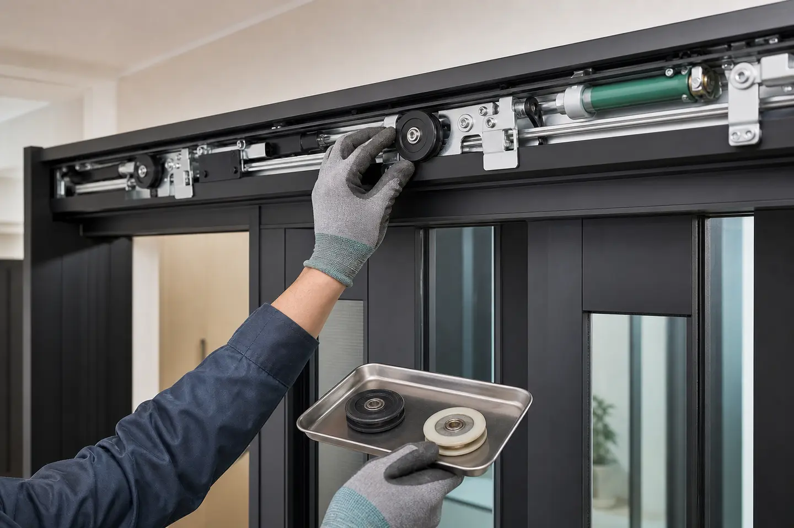

안녕하세요. 원슬라이딩도어 댐퍼 교체 깔끔한 작업! 홍프로집박사 인사드립니다. 합리적인 견적과 신속 정확한 작업, 차원이 다른 꼼꼼한 수리로 고객님의 공간을 안전하고 쾌적하게 바꿔드리는 업체, 바로 홍프로집박사 입니다.
이번 작업의 확인 포인트
문짝 움직임과 레일, 벨트, 롤러, 댐퍼의 연결 상태를 함께 확인하고 필요한 부속을 교체한 뒤 작동감을 조정합니다.


안녕하세요.
원슬라이딩도어 댐퍼 교체 깔끔한 작업!
홍프로집박사
인사드립니다.
합리적인 견적과 신속 정확한 작업,
차원이 다른 꼼꼼한 수리로
고객님의 공간을 안전하고
쾌적하게 바꿔드리는 업체,
바로
홍프로집박사
입니다.
각종 집수리는 언제든 전문가에게
맡기시어 한번의 작업으로
확실한 변화를 느껴보시기 바랍니다.
작업 전
.JPG?type=w966)
이번 작업은
의왕 고천동에서
진행된 슬라이딩도어 수리 작업
입니다.
원슬라이딩 중문을 사용 중이신 고객님께서
문이 부드럽게 닫히지 않고 갑자기
세게 닫히는 문제가 생겼다며
의왕중문수리를 요청해주셨는데요.
.JPG?type=w966)
실제 생활 속에서는 문이
‘쾅’ 하고 닫히는 상황이
단순한 불편함을 넘어 안전 문제로도
이어질 수 있기 때문에 빠르게
현장을 방문하게 되었습니다.
.JPG?type=w966)
도착 후 가장 먼저 문 작동
상태를 확인했습니다.
중문을 직접 열고 닫아보니
닫히는 마지막 구간에서
속도를 잡아줘야 할 장치가
전혀 작동하지 않고 있었습니다.
속도를 잡아줘야 할 장치가
바로 '댐퍼' 랍니다.
원슬라이딩 중문은 닫히기 직전에
댐퍼가 문을 부드럽게 끌어당기며
마무리해주는 구조인데, 이 기능이
사라지면서 문이 무게 그대로
밀려 닫히고 있었습니다.
이런 경우 대부분 댐퍼 고장이
원인이기 때문에 중문수리 과정에서
가장 먼저 점검하게 되는 부분입니다.
작업 중

이후 중문 분리 작업을 진행했습니다.
슬라이딩 중문은 구조상
탈거 과정이 중요하기 때문에
수평을 유지하면서
안전하게 분리했습니다.
무리하게 분리하면 롤러나
레일 정렬이 틀어질 수 있어
이후 작동에도 영향을 줄 수 있어요.
_(1).JPG?type=w966)
_(2).JPG?type=w966)
중문을 분리한 뒤 내부 댐퍼
상태를 확인해보니, 유압 기능이
거의 작동하지 않는 상태였습니다.
댐퍼 내부가 마모되면서
문을 잡아주는 힘이 사라졌고,
이로 인해 문이 제어 없이
닫히는 상황이 발생하고 있었던 거죠
.
고객님께 현재 상태를 보여드리니
왜 문이 갑자기 세게 닫혔는지
충분히 이해하셨습니다.
.JPG?type=w966)
새 댐퍼를 준비한 뒤
기존 고장난 댐퍼를 분리했습니다.
오래 사용된 제품이라 고정 부위가
단단히 자리 잡고 있었지만,
구조에 무리가 가지 않도록
순서에 맞춰 제거했습니다.
.JPG?type=w966)
.JPG?type=w966)
의왕중문수리에서는
이런 분리 과정 역시 중요합니다.
무리하게 힘을 주면 다른 부품까지
손상될 수 있기 때문입니다.
새 댐퍼를 원래 자리에 잘 장착하고
이후 스토퍼를 살펴보았습니다.
_(1).JPG?type=w966)
이어서 스토퍼를 분리해 상태를
다시 한 번 확인했습니다.
겉으로 보기에는 사용이 가능해 보였지만
충격을 반복적으로 받은 흔적이 있었고
탄성이 많이 줄어든 상태
였습니다.
이런 경우 지금 당장 문제는 없어 보여도
이후 문이 제대로 멈추지 않거나
소음이 다시 발생할 수 있습니다.
_(2).JPG?type=w966)
문이 강하게 닫히는 상황이 반복되면
충격이 스토퍼에도 그대로 전달되기 때문에
손상이 발생하는 경우가 많은데요.
의왕중문수리를 진행할 때
댐퍼만 교체하는 것이 아니라
스토퍼 상태까지 함께 확인하는 이유가
바로 이런 부분 때문입니다.
작업 완료
_(1).JPG?type=w966)
새 댐퍼를 설치한 뒤
도어 조립을 진행했습니다.
조립 과정에서는 단순히 부품을
장착하는 것에서 끝나는 것이 아니라
문이 닫히는 속도와 멈추는 타이밍까지
함께 조정
해야 합니다.
슬라이딩 중문은 미세한 정렬
차이만 있어도 작동감이
달라지기 때문에 레일과
롤러 상태를 함께 확인하면서
꼼꼼하게 조정을 진행했습니다.
_(2).JPG?type=w966)
조립이 완료된 후
개폐테스트
를 진행하니
이전과 달리
닫히는 속도가
안정적으로 제어되며 마지막 구간에서
부드럽게 마무리되는 모습
을
확인할 수 있었습니다.
고객님께서도 직접 사용해보신 후
쾅 하는 불편함 없이
부드럽게 닫히는 점에 만족해하셨습니다.
_(3).JPG?type=w966)
이번 작업처럼 댐퍼 교체로
해결되는 경우도 있지만,
충격이 반복된 환경에서는
스토퍼까지 함께 손상되는 경우가 많습니다.
그래서 의왕중문수리를 진행할 때는
눈에 보이는 고장만이 아니라
주변 부속 상태까지 함께
확인하는 과정이 필요
합니다.
_(4).JPG?type=w966)
중문이 갑자기 세게 닫히는 증상은
단순 문짝의 문제라기보다
내부 장치 이상이 대부분입니다.
특히 원슬라이딩 구조에서는
댐퍼와 스토퍼의 역할이 중요하기 때문에
이상이 느껴질 경우 빠르게
전문가와 상의하시는 것이 좋습니다.
방치할 경우 문틀이나 레일까지
영향을 받을 수 있어 더 큰 비용과
시간이 소요될 수 있기 때문이죠.
오늘의 의왕중문수리 사례처럼
문이 닫힐 때 소리가 크거나
속도가 제어되지 않는 문제가 생긴다면
초기 점검과 부분 교체로도 충분히
문제를 예방할 수 있습니다.
작은 이상을 가볍게 넘기기보다는
중문수리 전문가의 정확한 확인을 통해
안전하게 교체작업을 진행해보세요.
감사합니다.
홍프로집박사
였습니다:)
저희 홍프로집박사는
의왕중문수리 뿐 아니라
문 소음 및 쳐짐 보수,
레일 및 바퀴 교체 등의 수리는 물론
필름/도배/마루/기타 작업 등
각종 생활 집 수리 전반을 책임지는
확실한 집 수리 마스터입니다.
언제든 집수리 전문 업체
홍프로집박사로 연락하시어
불편함을 싹 해결해보세요!